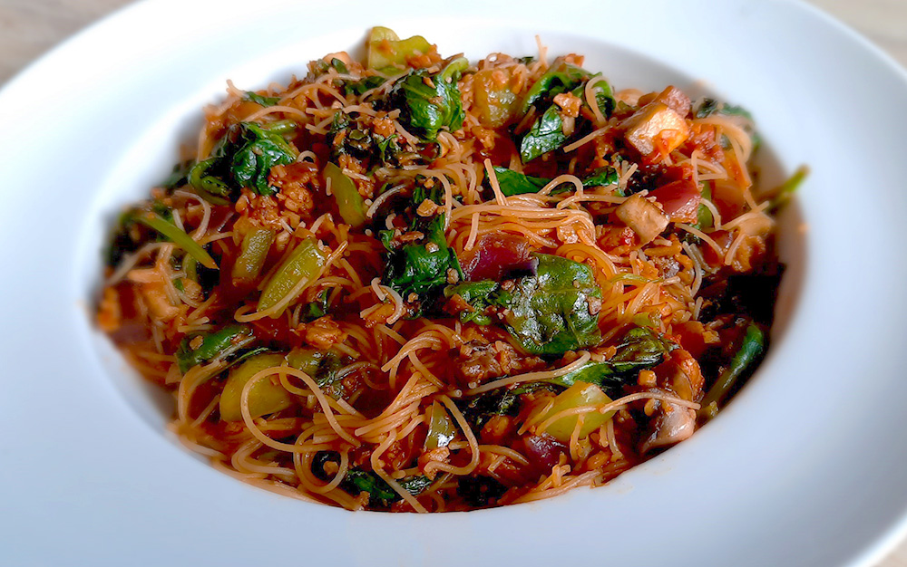

cottage pie

enchiladas

finse witte kool rolletjes

albanese byrek met spinazie

gnocchi

groene smoothie

biefstuk met chimichurri & gegrilde groenten

japanse beef teriyaki

chili sin carne met guacamole

bami met spinazie
Lekker en makkelijk vegetarisch te maken!

Bereidingsduur: 30 minuten
Aantal personen: 3
Ingrediënten:
300 gram (vegetarisch) gehakt
140 gram tomatenpuree
300 gram spinazie
100 gram (vegan) mie
1 paprika
1 ui
6 eetlepels ketjap
1 theelepel sambal
naar smaak peper en zout
300 gram (vegetarisch) gehakt
140 gram tomatenpuree
300 gram spinazie
100 gram (vegan) mie
1 paprika
1 ui
6 eetlepels ketjap
1 theelepel sambal
naar smaak peper en zout
Instructies:
1. Snijd de ui en de paprika in kleine stukjes. Bak het gehakt bruin en kook de mie volgens de instructies op de verpakking.
2. Voeg de ui en paprika toe aan de pan en bak deze kort mee. Voeg vervolgens in gedeeltes spinazie toe en laat dit slinken. Wanneer de mie klaar is, voeg je deze samen met de tomatenpuree, de ketjap en de sambal toe aan de pan.
3. Even flink roeren tot alles goed is gemengd. Voeg naar smaak peper, zout of wat chilisaus toe aan het gerecht.
1. Snijd de ui en de paprika in kleine stukjes. Bak het gehakt bruin en kook de mie volgens de instructies op de verpakking.
2. Voeg de ui en paprika toe aan de pan en bak deze kort mee. Voeg vervolgens in gedeeltes spinazie toe en laat dit slinken. Wanneer de mie klaar is, voeg je deze samen met de tomatenpuree, de ketjap en de sambal toe aan de pan.
3. Even flink roeren tot alles goed is gemengd. Voeg naar smaak peper, zout of wat chilisaus toe aan het gerecht.
Variatietip: Voeg ook eens champignons of ei toe!